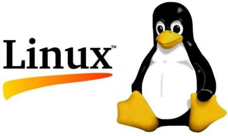
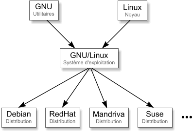
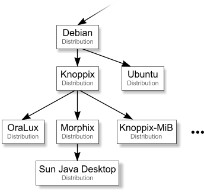

LUNIX
QU'EST CE QUE LINUX ?

Linux est un système d'exploitation, tout comme Windows ou MacOS X. Il permet de travailler comme on le ferait sous Windows.
Linux est en realité uniquement le coeur, on dit le "noyau" du système d'exploitation GNU/Linux .
Le noyau s'occupe:
-
La gestion de la mémoire.
-
L'accès aux périphériques.
-
La gestion du réseau.
-
Le partage du temps microprocesseur entre les programmes.
Contrairement à Windows dont l'interface graphique vous est imposée,
il existe différentes interfaces graphiques sous Linux, les principales étant Gnome, KDE et XFCE.
Il est même possible de faire fonctionner Linux sans interface graphique, ou même de ne lancer l'interface graphique que quand vous le souhaitez.
GNU est un projet qui a apporté des tas d'utilitaires au noyau Linux ,
tel que le fameux compilateur gcc, et les milliers d'utilitaires (tar, tail, man, bash...).
Ces utilitaires GNU , associés au noyau Linux , constituent le système d'exploitation GNU/Linux .
Linux est donc un noyau.
GNU est un ensemble de programmes utilitaires.
GNU/Linux est le système d'exploitation.
LES DSTRIBUTIONS
GNU/Linux étant gratuit, différentes sociétés l'on reprit et complété afin de distribuer un système d'exploitation à leur goût.
C'est ce qu'on appelle les distributions.

QUELLE DIFFERENCE ENTRE LES DISTRUTIONS ?
-
L'orientation: Par exemple, les RedHat sont très orientées serveurs d'entreprise (bases de données, serveurs web...) , Mandriva et Ubuntu sont plus orientées vers les utilisateurs de bureautique et les internautes, Flonix est conçue pour démarrer directement à partir d'une clé USB, etc.
-
La façon dont elles sont "fabriquées": par exemple, la RedHat est conçue par une grosse entreprise, alors que la Debian est conçue de façon plus démocratique (participation des internautes).
-
Le prix: Certaines sont payantes (RedHat, Mandriva...), d'autres gratuites (Fedora, Debian...). Notez qu'il arrive de devoir payer pour les distributions gratuites, mais le prix ne sert qu'à couvrir le support (CD), les frais d'envoi et d'éventuels manuels papier. Rien ne vous empêche de les télécharger et les graver vous-même.

Knoppix si vous ne voulez rien installer sur disque dur. Cette version de Linux démarre directement à partir du CD et n'écrit rien sur disque dur. Aucune installation n'est nécessaire sur disque dur. C'est un moyen de découvrir Linux sans risque.
Ubuntu est une formidable distribution, qui peut soit être utilisée comme Knoppix, soit installée sur disque dur.
L'interface est très propre et simple à utiliser. Une fois installée, on peut avoir accès à des centaines de logiciels supplémentaires en quelques clics.
LES ACTUALITES
Ubuntu 20.04 arrive avec le noyau Linux 5.4.